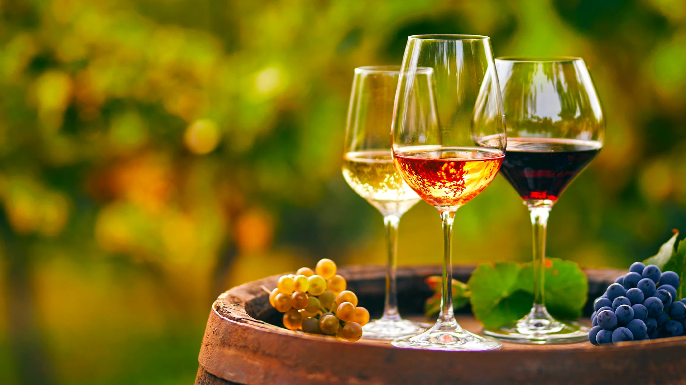

Un evento unico dedicato ai migliori vini italiani, tra degustazioni, cultura enologica e tradizioni francese e italiana. È un evento che unisce i nostri due paesi e vi invitiamo a diventare protagonisti di questa avventura culturale e territoriale.
Ottieni il tuo biglietto digitale per accedere al festival!
Prenota la tua esperienza
I migliori vini francesi e italiani selezionati per te.
Organizzate dagli operatori del settore su diversi temi vitivinicoli.
Esperienze per adulti e bambini da scoprire durante i tre giorni.